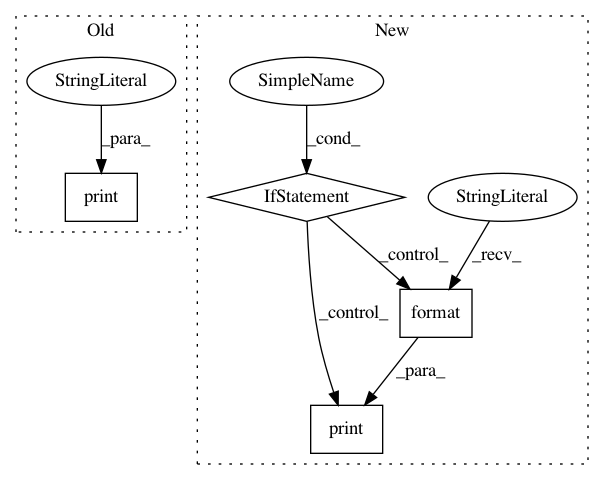

76125cafc9734441b4dab036e345fbb0abf1d84a,deeppavlov/models/ner/ner_network.py,NerNetwork,load,#NerNetwork#,197
Before Change
saver = tf.train.Saver()
ckpt = self.get_checkpoint_state()
if ckpt and ckpt.model_checkpoint_path:
print("\n:: restoring checkpoint from", ckpt.model_checkpoint_path, "\n")
saver.restore(self._sess, ckpt.model_checkpoint_path)
print("session restored")
else:
print("\n:: <ERR> checkpoint not found! \n")
After Change
@overrides
def load(self):
if self.load_path:
if isinstance(self.load_path, Path) and self.load_path.parent.is_dir():
if tf.train.get_checkpoint_state(self.load_path.parent) is not None:
saver = tf.train.Saver()
print("Restore NerNetwork model from {}".format(str(self.load_path)))
saver.restore(self._sess, str(self.load_path))
else:
warn("Provided `load_path` is incorrect!")
else:
warn("Provided `load_path` is incorrect!")
else:
warn("No `load_path` is provided for {}".format(self.__class__.__name__))
def tokens_batch_to_numpy_batch(self, batch_x, batch_y=None):
In pattern: SUPERPATTERN
Frequency: 5
Non-data size: 4
Instances
Project Name: deepmipt/DeepPavlov
Commit Name: 76125cafc9734441b4dab036e345fbb0abf1d84a
Time: 2018-01-26
Author: ol.gure@gmail.com
File Name: deeppavlov/models/ner/ner_network.py
Class Name: NerNetwork
Method Name: load
Project Name: ray-project/ray
Commit Name: 244aafdcf89ae814975c8c4e3faf0bd4995c7878
Time: 2020-09-05
Author: sven@anyscale.io
File Name: rllib/utils/exploration/tests/test_curiosity.py
Class Name: OneHotWrapper
Method Name: observation
Project Name: NVIDIA/OpenSeq2Seq
Commit Name: 882851cf519f60078b3222f516ae74fa39d25ee9
Time: 2018-12-06
Author: kathrin.bujna@gmail.com
File Name: open_seq2seq/utils/helpers.py
Class Name:
Method Name: TransferMonitoredTrainingSession
Project Name: NervanaSystems/nlp-architect
Commit Name: e998834136c5074583f528b7422c56ab57009c1f
Time: 2018-05-09
Author: peter.izsak@intel.com
File Name: nlp_architect/utils/text.py
Class Name: SpacyTokenizer
Method Name: __init__
Project Name: ClimbsRocks/auto_ml
Commit Name: 202dd1824317a3f3f956d3d1590597574e45cb7d
Time: 2017-07-16
Author: climbsbytes@gmail.com
File Name: auto_ml/utils_model_training.py
Class Name: FinalModelATC
Method Name: fit